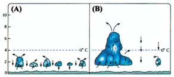
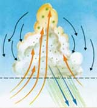

YAÐMURUN OLUÞUMU
Yaðmurun nasýl oluþtuðu uzun süre insanlar için bir sýrdý. Ancak hava radarlarýnýn keþfedilmesinden sonra, yaðmurun hangi evrelerden geçerek oluþtuðu kesinlik kazandý.
Buna göre, yaðmur üç evreden geçerek oluþur: Önce rüzgar yoluyla yaðmurun "hammaddesi" havalanýr. Ardýndan bulutlar meydana gelir ve en son olarak da yaðmur damlacýklarý ortaya çýkar.
Kuran'da yaðmurun oluþumu ile ilgili aktarýlanlar ise, tam da bu süreçlerden söz etmektedirler. Bir ayette bu oluþum hakkýnda þöyle bir bilgi verilir:
“Allah,
rüzgarlarý gönderir, böylece bir bulut kaldýrýr da onu nasýl
dilerse
gökte yayýp-daðýtýr ve onu parça parça kýlar; nihayet onun
arasýndan
yaðmurun akýp çýktýðýný görürsün. Sonunda kendi
kullarýndan
dilediðine verince, hemen sevince kapýlýverirler.„
(Rum Suresi, 48)
Þimdi
ayette ifade edilen üç evreyi teknik olarak inceleyelim.
| 1.
EVRE: "Allah rüzgarlarý gönderir..."
Okyanuslardaki köpüklenme ile oluþan sayýsýz hava kabarcýðý sürekli ortaya çýkmakta ve su zerreleri sürekli olarak gökyüzüne fýrlamaktadýr. Tuzca zengin olan bu zerreler daha sonra rüzgarlarla taþýnýr ve atmosferde yukarýlara doðru yol alýrlar. Aerosol adý verilen bu küçük parçacýklar "su tuzaðý" adý verilen bir mekanizmayla yine denizlerden yükselen su buharýný kendi çevrelerinde minik damlalar halinde toplayarak bulut damlalarýný oluþtururlar. 2. EVRE: "...böylece bir bulut kaldýrýr da onu nasýl dilerse gökte yayýp daðýtýr ve onu parça parça kýlar..." Tuz kristallerinin ya da havadaki toz zerrelerinin etrafýnda yoðunlaþan su buharý sayesinde bulutlar oluþur. Bunlarýn içindeki su damlacýklarý çok küçük olduklarýndan (0.01 ile 0.02 mm çapýnda) havada asýlý kalýrlar ve göðe yayýlýrlar. Böylece gök bulutlarla kaplanýr. |
Yukarýdaki çizimde okyanuslardaki köpüklenme ile oluþan su zerreciklerinin gökyüzüne fýrlamasý görülmektedir. Bu, yaðmurun oluþumundaki ilk aþamadýr. Bundan sonra oluþan bulutlardaki su damlacýklarý havada asýlý kalacak ve bunlar yoðunlaþarak yaðmuru oluþturacaktýr. Bu aþamalarýn tümü ayetlerde eksiksiz olarak bildirilmektedir. |
3. EVRE: "...nihayet onun arasýndan yaðmurun akýp çýktýðýný görürsün."
Tuz kristallerinin ve toz zerreciklerinin etrafýnda biraraya gelen su parçacýklarý iyice yoðunlaþarak yaðmur damlalarýný oluþtururlar. Böylece havadan daha aðýr bir konuma gelen damlalar buluttan ayrýlarak yaðmur biçiminde yere düþmeye baþlarlar.
Görüldüðü gibi yaðmurun oluþumundaki her aþama, Kuran ayetlerinde bildirilmektedir. Üstelik bu aþamalar doðru sýralama ile açýklanmýþtýr. Dünyadaki birçok doðal olayda olduðu gibi, bunda da Allah en doðru açýklamayý yapmakta, üstelik bu açýklamayý keþfediliþinden asýrlar önce Kuran'la insanlara duyurmaktadýr.
Yaðmurun oluþumu ile ilgili olarak baþka bir ayette þu bilgiler verilmektedir:
“Görmedin
mi ki, Allah bulutlarý sürmekte, sonra
aralarýný
birleþtirmekte, sonra da onlarý üst üste yýðmaktadýr;
böylece,
yaðmurun bunlarýn arasýndan akýp-çýktýðýný görürsün.
Gökten
içinde dolu bulunan daðlar (gibi bulutlar) indiriverir, onu
dilediðine
isabet ettirir de, dilediðinden onu çevirir; þimþeðinin
parýltýsý
neredeyse gözleri kamaþtýrýp götürüverecektir.„
(Nur Suresi, 43)
| Küçük bulut parçalarý (cumulus bulutlarý) rüzgarlar tarafýndan bulunduklarý yerden itilir ve birleþirler, yani ayette geçen ifade ile "... Allah bulutlarý sürmekte, sonra aralarýný birleþtirmekte..."dir. | Bulut
tipleri üzerinde araþtýrma yapan bilim adamlarý yaðmurun oluþumu ile ilgili
þaþýrtýcý sonuçlarla karþýlaþmýþlardýr. Yaðmur bulutlarý belirli bir sistem
ve aþamalar dahilinde oluþmakta ve þekillenmektedir. Yaðmur bulutlarýndan
biri olan cumulonimbus türü bulutlarýn oluþum aþamalarý bilimsel olarak
þöyledir:
1. AÞAMA, Sürülme: Bulutlar rüzgarlar tarafýndan bulunduklarý yerden itilirler yani sürülür. 2. AÞAMA, Birleþme: Rüzgar tarafýndan itilen bu küçük boyuttaki bulutlar (cumulus) sürüklendikleri yerde birleþip yeni büyük bulutlarý oluþturur.9 3. AÞAMA, Yýðýlma: Küçük bulutlar birleþtikten sonra büyük bulutun içindeki yukarý doðru çekiþ kuvveti artar. Bulutun merkezindeki yukarý çekiþ kuvveti kenarlardaki çekiþten daha güçlüdür. Bu yukarý çekiþler bulutun gövdesinin dikey olarak büyümesine neden olur. Böylece bulutlar yukarýya doðru geniþleyerek üst üste yýðýlmýþ olur. Bu, dikey olarak büyümüþ bulutun gövdesinin atmosferin daha serin yerlerine doðru uzamasýna sebep olur. Ýþte bu noktada atmosferin serin bölgelerinde bulutta su ve dolu damlalarý büyümeye baþlar. |
Bu aþamalarýn sonucunda, su ve dolu damlalarý -yukarý çekiþ gücünün onlarý destekleyemeyeceði kadar- aðýrlaþtýklarý zaman da bulutlardan yaðmur, dolu vs. þeklinde düþmeye baþlarlar.
Unutmamak
gerekir ki meteorologlar bulut oluþumu, yapýsý ve fonksiyonu ile ilgili
detaylarý geliþmiþ ekipmanlar (uçak, uydu, bilgisayar vs.) kullanarak yakýn
zamanda öðrenmiþlerdir. Görülen odur ki, Allah bu ayetlerinde de bize 1400
sene öncesinde bilinmesi mümkün olmayan bir bilgi vermiþtir.
 (A) Ayrý ayrý küçük bulut parçalarý (cumulus bulutlarý) (B) Küçük bulutlar biraraya geldiðinde oluþan daha büyük bulutun içindeki yukarý çekilmeler artar, böylece bulutlar yukarýya doðru yýðýlýr. |
 Yukarýya doðru geniþleyerek üst üste yýðýlan bulutlar dikey olarak büyüdükleri için atmosferin daha serin yerlerine doðru ulaþýrlar. Atmosferin serin bölgelerinde ise su ve dolu damlalarý büyümeye baþlar. Aðýrlaþan su damlalarý buluttan yaðmur, dolu vs. þeklinde düþmeye baþlar. Ýþte bu bilimsel gerçek Nur Suresi'nin 43. ayetinde 14 asýr önce: "... sonra da onlarý üst üste yýðmaktadýr; böylece, yaðmurun bunlarýn arasýndan akýp çýktýðýný görürsün..." ifadesi ile Allah tarafýndan bildirilmiþtir. |